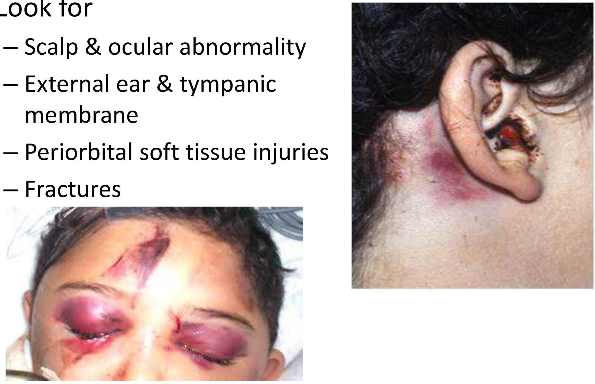
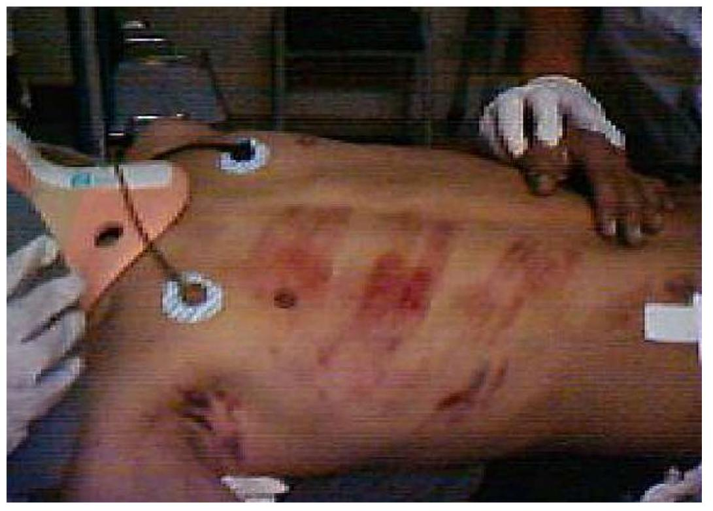

Head Trauma
- •Look for
- •Scalp & ocular abnormality
- •External ear & tympanic membrane
- •Periorbital soft tissue injuries
- •Fractures

- •Immediate recongnition of conditions
- •Acute extradural hematoma
- •Lucid Interval
- •Hemiparesis
- •Acute subdural hematoma
- •Base of skull fracture
- •Battle sign ; Racoon eyes
- •Cerebral concussion
Remember..
- •Isolated head trauma doesn't causes hypotension.
- •GCS < 8 : Severe Head Injury
- •Cushing response is physiological but has poor prognosis sign
Management of Head Trauma
- •Intubation & Hyperventilation
- •IV Fluids
- •Nurse in head up position
Chest Trauma
- •Examine
- •Clavicles & ribs fracture
- •Breath sounds & Heart sounds
- •Early deaths in thoracic trauma includes airway obstruction, cardiac tamponade & aspiration.

- •Tension pneumothorax
- •Haemothorax
- •Pulmonary contusion (Delayed deterioration in RR)
- •Myocardial contusion (Sternal #, ECG)
- •Cardiac tamponade (Beck's triad)
- •Great vessels & Aortic rupture
Abdomen trauma
- •Penetrating wound
- •Abdomen distension
- •Tense and tenderness
- •Bowel sound

Abdominal Trauma
- •Patient with serious accident is considered to have abdominal trauma until proved otherwise.
- •Unrecognized abdominal injury remains frequent preventable cause of death.
- •$20 \%$ of patients with acute hemoperitoneum have no sign of periotneal irritation at first examination.
Abdominal Trauma - Management
| STABLE | UNSTABLE |
|---|
| No Abdominal Sign | Observe | DPL/FAST Scan |
| Abdominal Sign | CT Scan | Laparotomy |
Abdominal Trauma - Associated Injuries
- •Urethral Injury
- •Triad : Butterfly rash in perineum, Blood in ext urethral meatus, Urinary bladder distension
- •Rectal injury
Spinal Trauma
- •Examination must be done in neutral position.
- •Mobilization by log roll
- •Transport in neutral position in spinal board.
Limb Trauma
- •Look
- •Color
- •Deformity
- •Wound
- •Swelling
- •Feel
- •Tenderness
- •Crepitation
- •Temperature
- •Distal neurovascular status
- •Move
Limb Trauma - Special Issues
- •Active bleeding
- •Open Fracture
- •Compartment syndrome
- •Amputated Extremity